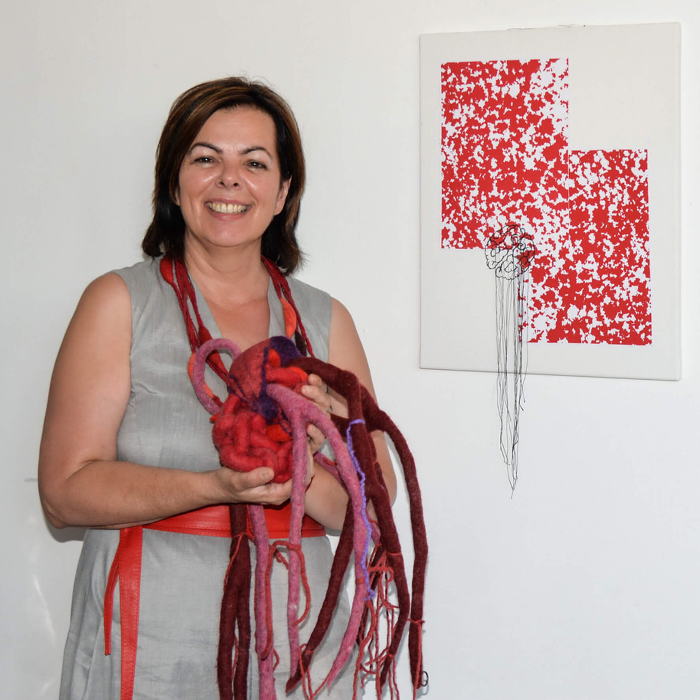

Werdegang einer Textilkünstlerin
Das große Interesse für alles Textile wurde mir in gewisser Weise in die Wiege gelegt. Bereits mit 4 Jahren durfte ich der Freundin meiner Mutter beim Schneidern zusehen. Die Arbeit mit den unterschiedlichen Stoffen, den Fäden und Nadeln war so faszinierend für mich, dass ich bereits mit 5 Jahren den unbedingten Wunsch hegte, ebenso wie „Annatant“ Schneiderin zu werden.
Nach der Modeschule Villach besuchte ich die Meisterschule für Mode am Ortweinplatz in Graz und absolvierte im Anschluss die Meisterprüfung für Damenkleidermacherinnen. Danach arbeitete ich 9 Jahre als freie Modedesignerin.
Als Spätberufene zog es mich mit 33 Jahren in die Pädak Graz Eggenberg, wo ich unter anderem Textiles Werken bei Professorin Ingeborg Pock studierte. Seit 2000 unterrichte ich in verschiedenen Volks-, Haupt- und Neuen Mittelschulen und gebe meine Expertise in verschiedenen Fortbildungsveranstaltungen an Interessierte weiter.
Darüber hinaus bin ich seit 2010 Lehrbeauftragte der Kirchlich-Pädagogischen-Hochschule (KPH) Graz in den Fachbereichen Textildesign, Textildidaktik und fachdidaktische Werkstätte.
Ab 2017 absolvierte ich in der „Schule der Künste“ in den Bereichen „Künstlerische Wege“ und „Siebdruck“ mehrere Fortbildungsveranstaltungen bei Prof. Peter Angerer und bei Prof. Gerhard Raab.
Wenn du dich für meine Arbeiten interessierst bzw. Fragen zu mir oder meinem Angebot hast, dann freue ich mich auf deine Kontaktaufnahme.
Herzliche Grüße,
Christine Guttmann


{kind=link}
{kind=link}